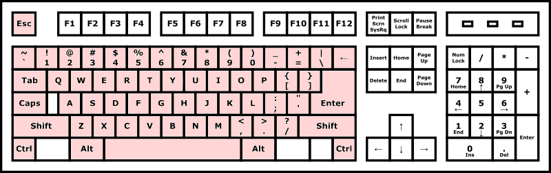

Unix CLI: Advanced
This article is adapted from the notes of the Unix@Home Workshop held in August 2020.
Learning Objectives
Students should
- appreciate the philosophy of Unix where small utility programs can be composed together to perform a complex task using the pipe
|operator. - be aware of basic Unix utilities:
echo,sort,uniq,grep,head, andtail. - be able to use basic pattern matching
*?[]and{}inbash. - know how to use Tab, Ctrl+P, and Ctrl+N to work more efficiently in
bash. - know how to save time and effort by automating long complex commands using
bashscripts.
Composing Programs with |
Another key innovation of Unix that led to its success is the invention of the | operator.
Before Unix, operating systems tend to provide complex, monolithic, programs. The philosophy of Unix, however, is to provide many small, simple, utility programs, that can be composed to complete a more complex task. These small programs each do one thing only (and do it well) and so are easier to write and less prone to bugs.
The composition of these utility programs relies on two things. First, plain text is often used as input and output of the programs. These allow the programs to understand each other easily. Second, they use | to communicate with each other. The | operator takes the standard output from one program and redirects it as the standard input of another program.
For instance,
1 2 | |
cat and wc together. Recall that cat reads the content of the file and prints it to standard output. Here, we pipe the standard output from cat to wc. So now, these printed texts are redirected as the standard input to wc.
But this is just the same as
1 | |
|?
Now, recall that we have made copies of test.txt earlier, into foo.txt and bar.txt. If you have not done so or have removed them, you can quickly reproduce the files with:
1 2 | |
Let's suppose now I want to count the total number of words for all three files. Instead of calling wc on each file one by one, and sum them up myself. I can just run:
1 2 | |
Here, cat reads the three files, concatenates their content, and passes the output to wc for counting.
Useful Utilities
Before we see more interesting examples of using |, let's move beyond cat and wc, and see what other simple tools are there in Unix.
head and tail
head and tail print out the first \(k\) lines and last \(k\) lines from a file (or standard input if the file name is not given). By default, \(k\) is 10, but you can pass in an argument to specify \(k\).
1 2 3 4 5 6 | |
echo
echo simply prints out the command-line argument to the standard output.
1 2 | |
sort
sort rearrange the input lines in alphabetical order.
1 2 3 4 5 6 7 8 9 | |
In the example above, I entered john, jane, peter, mary followed by Ctrl+D to signify the end of input. sort prints out jane, john, mary, peter, in that order.
uniq
uniq remove any two consecutive lines that are the same.
1 2 3 4 5 6 7 8 9 10 | |
For instance, in the above, there are three consecutive lines of 2, so only one remained. There are also two consecutive lines of 1, so only one remained.`
grep
grep returns the lines of text from the given file (or the standard input) that matches the given string. For instance, run
1 | |
and start typing in some lines of text, some containing abc, some do not. grep will spew out into the standard output all the lines that contain the text abc somewhere. As usual,
hit Ctrl+D when you are done.
Pipe Example
To give you an example of how useful | is, here is a real example. When processing the registration of the workshop, I have quite a few registrations that are duplicates — students registered more than once. I need a quick way to count how many unique registrants are there.
So I keep the student ID of all registrants in a file called ID. For instance, the file ID contains (not real data, of course)
1 2 3 4 5 6 7 8 9 | |
Now, to count how many unique registrants, I just need to run:
1 2 | |
To count how many uniq registrants are CEG students, I just change it to:
1 2 | |
Pattern Matching in bash
We now show you another productivity shortcut. In an example earlier, you have seen how we passed in more than one file name into cat. Recall that we can use Tab to auto-complete the file names, so we can hit fewer keys on the keyboards.
Now, we show you there is an even faster way.
Instead of
1 | |
We could just run
1 | |
The * is a special character in bash that represents 0 or more characters. So, this command essentially says, cat any files that contain 0 or more characters, followed by .txt.
The table below summarizes the useful patterns:
| Pattern | Matches |
|---|---|
* |
0 or more characters |
? |
one character |
[..] |
one character, coming from the given set between [ and ], - to indicate a range. |
{.., ..} |
Either one of the names, separated by ,. |
Example 1:
1 2 | |
Since we use three ?, it matches any file name with three characters followed by .txt.
Example 2:
1 2 | |
The expression [f-t]*t matches all file names that start with the alphabet f, g, etc., until t, followed by zero or more characters, followed by t.
Example 3:
1 2 3 4 | |
The expression {fo,ba}??txt matches any file names the start with either fo or ba, followed by two characters, followed by txt.
Leveling Up Your Productivity with CLI
Minimizing Hand Movements
You have seen how you can manage files and navigate around the directory structure, all by interacting with the command-line interface. No windows. No mouse. Just you, the keyboard, and the terminal. You do not even need to use any arrow keys or function keys.
Why is this a big deal? Let's look at the image of the keyboard below:

We only need to use the keys colored in pink. And since these keys are concentrated in a small region on the keyboard, for most of us, we can reach the keys if we just position our hands over the keyboard1, we only need to move our fingers to type.
Minimizing Typing
We can even minimize the movement of our fingers in several ways by typing less. We have seen several ways where we have achieved these:
- Unix commands are named economically — they are often only a few characters long.
- We can use Tab to auto-complete a command or a file name.
- We can use Ctrl+P or Ctrl+N to repeat a previous command.
There are many more bash shortcuts for productivity, if you are keen, take a look at this cheat sheet.
You have also seen that Unix has many small, simple, utilities that we can compose to solve a task. But composing them requires much typing:
1 | |
If we need to run this over and over again or share this command with someone, we can simply put these commands in a file, and then run it by invoking its name. Such a file containing commands for the shell is called a shell script.
For example, let's create a file named hello.sh containing the line echo hello! by:
1 2 | |
The extension .sh is not necessary, but it is just something I use so that I can tell that this file contains a shell script. In the example above, cat will wait for me to enter something on the keyboard. So I entered echo hello! followed by Ctrl+D to indicate the end of the input.
Now, to execute this file, we run:
1 2 | |
1 2 | |
Recall that we said Unix shells do not necessarily interact with the users. This is an example. We pass the file hello.sh to a new instance of bash, asking it to interpret the lines inside this file as commands to execute.
Remember that we want to minimize typing. What if we can just pass the filename directly to bash to execute?
1 2 | |
Here, we specify the relative path of the script hello.sh, including the prefix ./ (for reasons that we will explain later). But we should get an
error telling us Permission defined. Recall from the File Permissions section that a file needs to have the executable x permission to be executed. So we need to add this permission for ourselves:
1 2 3 | |
-
The recommended placement of hands over the keyboard is so that the thumbs are over the Space bar, the left fingers are over A S D F, and the right fingers are over J K L ;. ↩